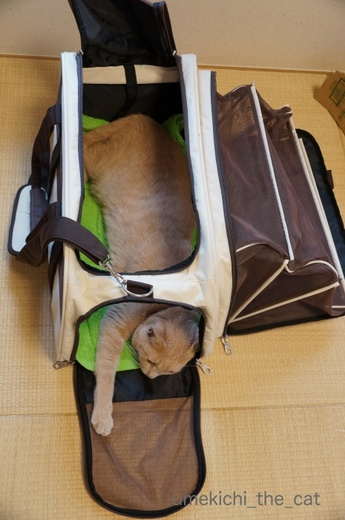
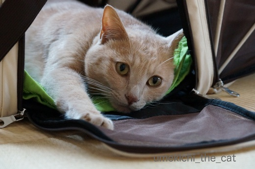
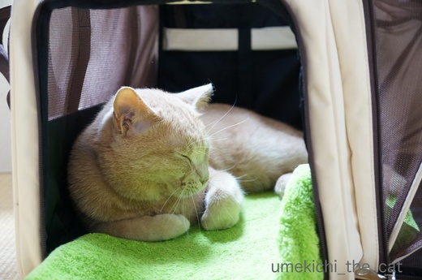
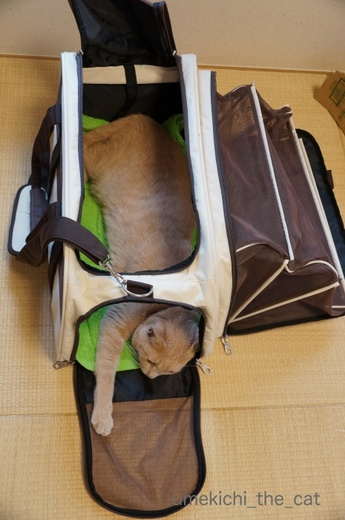
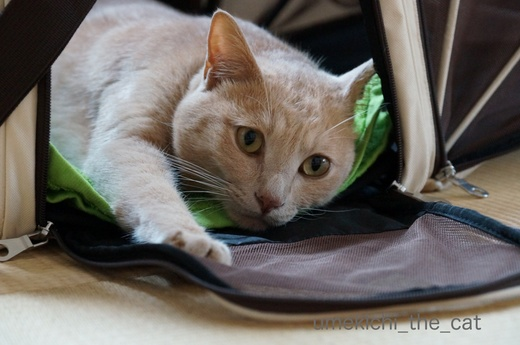
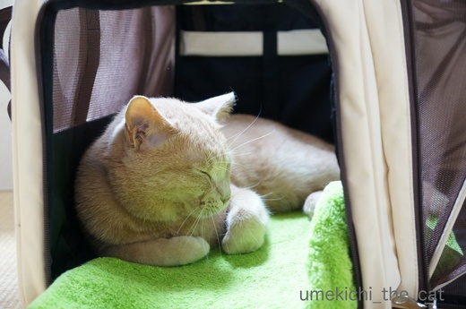

せまい方が落ち着く梅吉 [梅吉]
ついにあの場所を取るサークルをしまいました！
ここ一週間くらいは入ることもほとんどなかったので片付けようと畳んでいると
「わしあそぶー」と飛んでくる猫あるある。
どうせ広げても一瞬入って興味を失うのだから、と替わりにキャリーを広げてあげました。

早速入る梅吉さん。
![[猫]](https://blog.ss-blog.jp/_images_e/101.gif) ♪〜
♪〜

こんぱくと、なかんじでええやん。おちつくで。

縦にも横にものびーが出来る様に全て解放。

せまいながらもくつろいでます＾＾
例のサークルは遊ぶ場所ではありましたがこんなふうに中で寝る事はありませんでした。
ベッドとしておいてあるカゴや箱も好んで使うのが一番小さいサイズ。
私が子供の頃もソファの影、本棚の間、ローテーブルの下とせまい場所が好きでした。
なんだか落ち着いたんですよねー。
どうやら梅吉も同じ志向の様です。

あくびの出る5秒前。口元がモリッとなっているのに注目です。

気持ち良さそうにあくびをくわ〜っ。

台風も過ぎ、前線の雨も上がって一瞬差し込んだ日差しの中で
気持ち良さそうに寝ちゃいました。
昨日は「台風が通過する！」今日午前中は「前線の大雨に注意！！」と
盛んに言われていましたが、我が家の辺りは雨足がちょっと強かっただけで何事もなし。
ありがたい事です。
 ↑ガブッと一押し↑
↑ガブッと一押し↑
今年も梅酒を仕込みました。
これがホントの梅しごと＾＾
ここ一週間くらいは入ることもほとんどなかったので片付けようと畳んでいると
「わしあそぶー」と飛んでくる猫あるある。
どうせ広げても一瞬入って興味を失うのだから、と替わりにキャリーを広げてあげました。

早速入る梅吉さん。


縦にも横にものびーが出来る様に全て解放。

せまいながらもくつろいでます＾＾
例のサークルは遊ぶ場所ではありましたがこんなふうに中で寝る事はありませんでした。
ベッドとしておいてあるカゴや箱も好んで使うのが一番小さいサイズ。
私が子供の頃もソファの影、本棚の間、ローテーブルの下とせまい場所が好きでした。
なんだか落ち着いたんですよねー。
どうやら梅吉も同じ志向の様です。

あくびの出る5秒前。口元がモリッとなっているのに注目です。

気持ち良さそうにあくびをくわ〜っ。

台風も過ぎ、前線の雨も上がって一瞬差し込んだ日差しの中で
気持ち良さそうに寝ちゃいました。
昨日は「台風が通過する！」今日午前中は「前線の大雨に注意！！」と
盛んに言われていましたが、我が家の辺りは雨足がちょっと強かっただけで何事もなし。
ありがたい事です。
今年も梅酒を仕込みました。
これがホントの梅しごと＾＾

カフェオレ色の梅吉

梅吉 2023年8月10日 永眠


梅吉と出会った譲渡会

犬猫の理由なき殺処分ゼロ
妄想広告
UMEKICHI 光

爆発的に早い！
時々攻撃的！
Thanks to Mr.Boss365
爆発的に早い！
時々攻撃的！
Thanks to Mr.Boss365

あくび一瞬前の、口元「もりっ」と、がいいですね！
飼い主様ならではの貴重ショットにやられました(ズキューン
梅酒美味しそう！でも梅酒飲むと悪酔いするんですよね(飲み過ぎ？
by BillK-ko (2017-07-05 15:01)
前記事のバナ吉さん♪可愛すぎますね(#^.^#)
ウサギさんもゴムを取れば大丈夫なのでしょうか？？
キャリー内でご機嫌な梅吉さんですね！
あくびする梅吉さんを見ていると
私まで眠くなっちゃいました！
by きぃ (2017-07-05 15:48)
BillK-koさん＞口元「もりっ」からのおひげ全部まえーっ！
一連のあくびの動作でしたー。
狙っていたわけではなくシャッター切っていたら偶然写った
飼い主もびっくり＆よだれのショットよ(^_－)☆じゅるる
梅酒、甘くて美味しいからどんどん進んじゃうよねー。
果実酒を仕込むお酒はアルコール度数35℃くらい・・・
アルコール度数高い・・・^^;飲み過ぎ注意ですわよーww
by ちぃ (2017-07-05 15:51)
きぃさん＞ウサギさんはただいま微調整中です(^_－)☆
キャリーは病院に行く乗り物だと思うんですけどね・・・
こんなにご機嫌にくつろいじゃうんですよ。梅吉神経太〜いでしょww
by ちぃ (2017-07-05 16:43)
狭い方が意外と安心できるのかも？
by みぃにゃん (2017-07-05 20:13)
今時のキャリーバックはすごいことになりますなぁ〜
ニャンさんは狭いところがお好きなようで、梅吉さんも似合っています。
狭いところ、私は遠慮します（笑）
猫になった時に考えます。
by kiki (2017-07-05 21:06)
あくび5秒前のお口にキュンキュン来ます(*^▽^*)
くいっと曲げた猫手も愛らしく、猫って何もかもなんでこんなにかわいいんでしょう～♪
狭いところ好きですよね。
それも入ってほしくないところの方が好き・・・(-_-メ)
by ゆきち (2017-07-05 21:21)
梅吉さん、キャリーバッグだとお寛ぎで気持ちよさそうに寝るんですねぇ♪( ´▽｀)
広すぎると落ち着かない・・・私も一緒ですw
by ニッキー (2017-07-05 21:24)
キャリーバッグ梅吉さん、あくびして気持ち良さそうですね。^^)
私も、体育館のような広い空間のど真ん中にいるよりは、
隅っこに居たほうが安心できるかもしれません。^^;ｲﾐ、ﾁｶﾞｳｶﾅ?
喉越しスッキリ・冷たい梅酒、いいですねー！！
by yes_hama (2017-07-05 21:52)
あくび〜(*^^*)フフ
私も撮りたい〜。
いつもチャンスを逃してしまいます(><)
あくびのさいごにお耳が後ろに引っ張られるみたいになりませんか？
あの瞬間を撮りたいんですよねぇ。
専属カメラマンでも雇わないとだめか(^^;
by も〜 (2017-07-06 09:08)
ナノもキャリー大好き、でももうサイズ的にみっちり・・横がびろろろ～んと広がるキャリーいいですねコレ。梅吉君も寛いでますね～(^_^)
うちも梅酒漬けましたよ～。早く飲みたいですね!!
by palpal (2017-07-06 09:46)
大きいの仕舞ったんですね。
小さいのでも全然平気そうだし、良かったですね＾＾
また部屋が広くなる（ｳﾌ
梅酒うちも漬けました。楽しみですよね(≧∇≦)
by muku (2017-07-06 12:23)
コメントありがとうございました。
あくびする猫のしぐさに平和を感じます(^^♪
by riverwalk (2017-07-06 21:48)
KENT0mg さんのブログ経由で、訪問させてもらいました。
にゃんこ のお名前、梅吉くんっていうのですね。
どうも、私 うめむす と申します。
よろしくお願い致します！
また、訪問させて頂きます。
by うめむす (2017-07-07 00:16)
ありますねぇ。
我が家では
あまり入らなかったダンボール箱を捨てようとすると
急に入って邪魔します（爆）
それで捨てられなくなるんですよね＾＾；
by ぽちの輔 (2017-07-07 06:17)
似たような毛色の野良出身の茶太郎と違って、お宅の猫ちゃんは愛に満たされたお顔ですねえ。茶太郎は、まもなく天国です。ぼくのブログ記事だけがかれがこの世にいた証しとなりそうです。
by 暁烏 英（あけがらす ひで） (2017-07-07 07:22)
ほんっと気持ちよさそう。
狭くないの？ってくらいのほうが落ち着くみたいですよねー^^
うちもじつは、電子レンジが入っていた段ボール、
さっさと片付けようと思っていたのに、２ニャンのハウスになってます^^;
そろそろ変形してきたので週末には処分しないと！
でも寛いでる姿観ると、なかなかね^^;
by リュカ (2017-07-07 09:41)
猫って、狭いとこ好きですよね～。伸びたら長いくせに丸まると小さいし（笑）![[ダッシュ（走り出すさま）]](https://blog.ss-blog.jp/_images_e/164.gif)
うちもハル君の為にケージを買いましたが、もう少し大きくなったら倉庫行きです
いらなかったかなーとは思ったけど先住の2匹と慣れるまでは、と購入。
梅酒漬けたのですね！私は今年も恒例の梅干しをつけてます。梅雨明けで完成です(≧∇≦)
by ミミハナ (2017-07-07 11:01)
片付けようとすると「わしあそぶー」あるあるですね！＾＾
狭いところって、そういえば子供の頃自分も好きでしたね＾＾
くちもとがっもりっと、おヒゲが前へ、サイコー♪
by sana (2017-07-07 11:21)
私も昨日、たまたまくるみのあくびを撮影できました～。
でも、ちぃさんみたいにきれいに撮れなかった＞＜
大きなサークルは片付けられちゃったのね。
代わりのキャリーバッグ。色んな所が開いて楽しいし
キャンプ出来そうです(^-^)
by emi (2017-07-07 13:44)
みぃにゃんさん＞安心するのでしょうねー。少なくとも閉所恐怖症ではないようです＾＾
kikiさん＞ペット様さまの世の中なので色々あるのですよ＾＾
うちのは片サイドしか開きませんが両サイド開くタイプもありました。
来世は家猫志願のkikiさんは狭いところダメですか？
あ、通り道に長々と横になるのが専門の家猫さんになれば良し！ですねww
ゆきちさん＞入って欲しくない狭いところ代表は
タンスの引き出しを抜いた後の空間です！！
引き出しを戻そうとしても奥から出てこないので
そのまま放置していると・・・
整理したばかりの引き出しの衣類をツクネて寝ているという・・・(꒦ິ⌑꒦ີ)
衣替えの時期は梅吉との戦いでもあります(-_-メ)
ニッキーさん＞最近は箱にもカゴにも入らずキャリーで寝てばかりです。
でも夜はちゃんとお布団に来るんですよ〜。（自慢）
ニッキーさんも狭いところ好き・・・私同様来世は家猫でしょうか(≧▽≦)
yes_hamaさん＞ああ、体育館は落ち着きません！壁際死守です！！
梅酒、ちょっと甘さ控えめで作りました＾＾
出来上がりが楽しみで〜す。まずはロックでふふふ。
も〜さん＞あくび前・最中・後と顔のあらゆる筋肉がいろんな方向に動いて
ほんの何秒かのあいだでいろんな表情になりますよね＾＾
お耳が後ろに引っ張られる瞬間は連写ならいけるかも！！
今度狙ってみます(^_－)☆
palpalさん＞両サイド開きのタイプもあったんですよ〜。
あちこちで「いいね、どこの？」と聞かれるのですが
残念ながらもう製造中止みたい。ちなみにア○リスオーヤマよ(^_－)☆
梅酒、待ちきれなくて開けちゃうから2年ものとかが出来ません・・・
mukuさん＞梅吉はあんまり物にこだわらなくって「まあええやん」と
なんでも使ってくれるので楽なんですよ〜＾＾
梅酒いつ飲みますかー？
浸けてる方結構いらっしゃるので「初飲み」報告もいいですね(≧▽≦)
by ちぃ (2017-07-07 15:32)
riverwalkさん＞猫のあくび・寝姿は平和の象徴ですよね＾＾
あ、ヘソ天もそうですねー。
安心・安全じゃないとあんなあられもない格好は出来ませんもの(≧艸≦)
うめむすさん＞いらっしゃいませー。
お越しいただいてありがとうございます♪
「梅吉」は推定誕生日が梅雨時だったこと
我が家の隣の神社の一文字「吉」をもらって名付けました。
のほほん猫ブログですがまたお越しくださいね＾＾
ぽちの輔さん＞うっかりしていたら段ボールだらけになりますよね。
一個増えたら一個捨てる！と
断捨離本の標語を心を鬼にして実践しています (^▽^;)
暁烏 英さん＞茶太郎くん夏を越せずに行ってしまうのでしょうか・・・
でも最後の時を気にかけてくださる方がいて少しホッとしています。
梅吉とよく似た茶太郎くん、私の記憶にはしっかりと刻まれましたよ。
我が家が梅吉に注ぐ愛情・・・梅吉には少々迷惑なくらいかもしれません (^▽^;)
リュカさん＞電子レンジが入っていたダンボールは
遊んで良し、中で寝て良しのステキサイズだったのでは＾＾
２にゃんさんで使用頻度が激しいと変形も早そうだー。
うちは変形する前にかじって、むしって、小さくなってゆきます (^▽^;)
変形・縮小、馴染んだ感じがにゃんこにはたまらなそうよね(^_－)☆
by ちぃ (2017-07-07 16:00)
ミミハナさん＞猫は軟体動物ですよねー＾＾
うちも梅吉を迎える時に迷ったのですが災害時に避難用品としても必要かと
サークルを買いましたよ。
折しも九州北部での大雨の災害。
また避難用品のチェックをしなきゃって思っています。
ミミハナさんのお家は影響ない様でほっとしました＾＾
ハルくんのトライアル期間は終了？
問題なくうまく馴染んでみなにゃんよいこです(๑˃̵ᴗ˂̵)و
梅干し・・・憧れで〜す。
マンションだと管理する場所がね、とか理由つけてますが
１Kgでも漬けられるんですってね。来年やってみようかな・・・
sanaさん＞sanaさんも狭いとこ派(≧▽≦)
前世がねこ？来世がねこ？
くちもともりっとは普段見られない表情が◎でした♪
emiさん＞あくび写真いけましたか！！
今回の写真はたまたまうまく撮れましたが
私はきれいに撮れてなくてもブログに載せちゃう方です＾＾
猫ブログは臨場感重視！と思ってます(๑˃̵ᴗ˂̵)و
キャリーバッグは開放感が良いかなぁと購入しました。
キャンプ・・・梅吉は「わしをきゃりーからだせー、だすんじゃー」と
キャリーを破壊しそうです (^▽^;)
by ちぃ (2017-07-07 17:03)